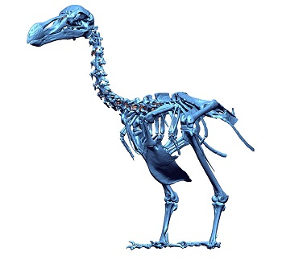
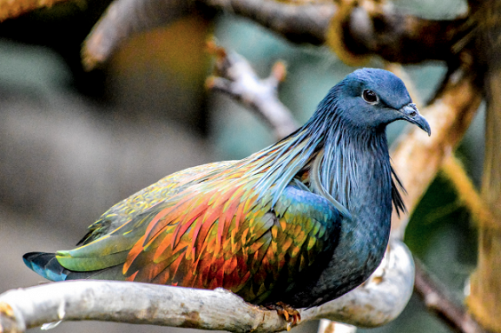
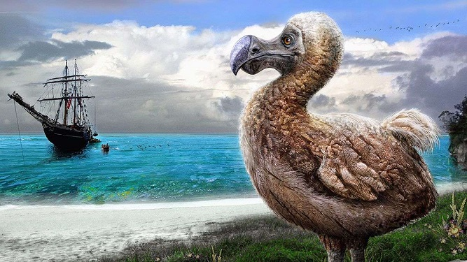
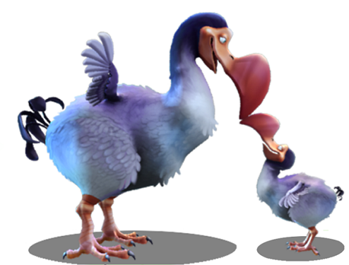
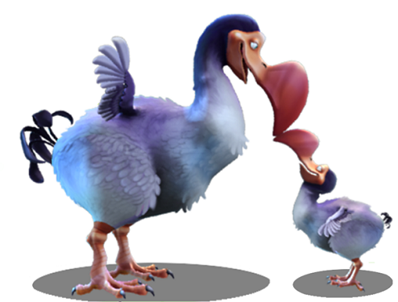

Jump to Image Gallery
Fun Facts
- Before the ‘official’ naming of the dodo bird, it was called the wallowbird
- The closest living relative is the Nicobar Pigeon
- It was said that Lewis Carroll (author of ‘Alice's Adventures in Wonderland’) ldquo;identified so closely with the long-gone Dodo”
- To help with digestion, dodo birds used gizzard stones
- Sideroxylon grandiflorum (a.k.a. tambalacoque) was also called the dodo tree
- Since they originally had no predators, females only laid one egg during each season
- Although dodos are known to be clumsy and fat, after studying a skeleton, some paleontologists concluded that it was an agile bird
- Dodo birds may have used their wings for balance
- The Mauritian coat-of-arms has a dodo bird on it
- There are several songs, bands, and novels/magazines that are named after the dodo
- Dodo birds were featured in the “Ice Age” movie (from 2002)
Image Gallery




 
